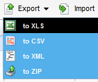
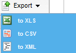

Code tables can be exported in various formats. On the Code Tables page, select the code tables to be exported and click the Export button. Select the format of the output: XLS, CSV, XML or ZIP.

Codes can be exported in various formats. On the Details page of a code table, select the codes to be exported and click the Export button. Select the format of the output: XLS, CSV or XML.

You can export a code table from the command line in Windows and Unix. The catalog export syntax is as follows:
catalogExport username=a password=b server_url=http://localhost:8080/cwf export_folder=C:\tickets export_type=codetable exported_objectid_list=ACC_CAN_TYPE:manufacturer
The following are examples of using this command:
catalogExport username=upadmin password=upadmin server_url=http://localhost:8080/cwf export_folder=D:\codeTableExport export_type=codetable exported_objectid_list=t1
catalogExport username=upadmin password=upadmin server_url=http://localhost:8080/cwf export_folder=D:\codeTableExport export_type=codetable exported_objectid_list=cwtct_priceType:provState_CA
catalogExport username=upadmin password=upadmin server_url=http://localhost:8080/cwf export_folder=D:\codeTableExport export_type=codetable exported_objectid_list=cwtct_priceType:provState_CA:manufacturer